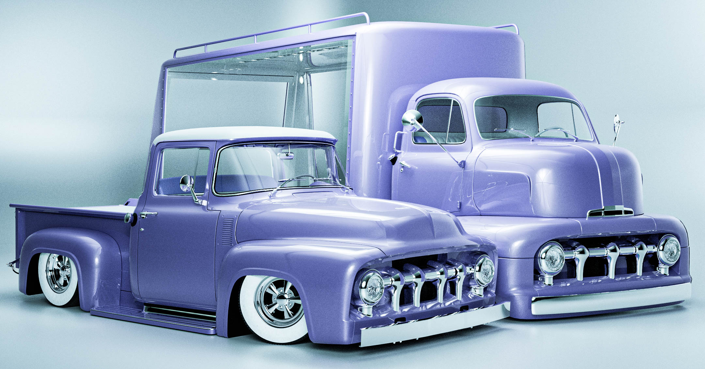
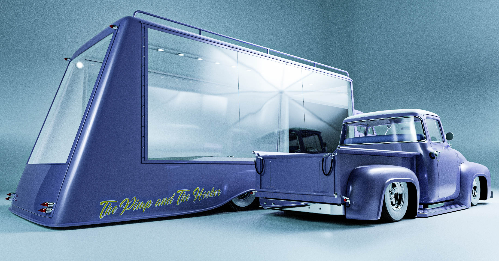
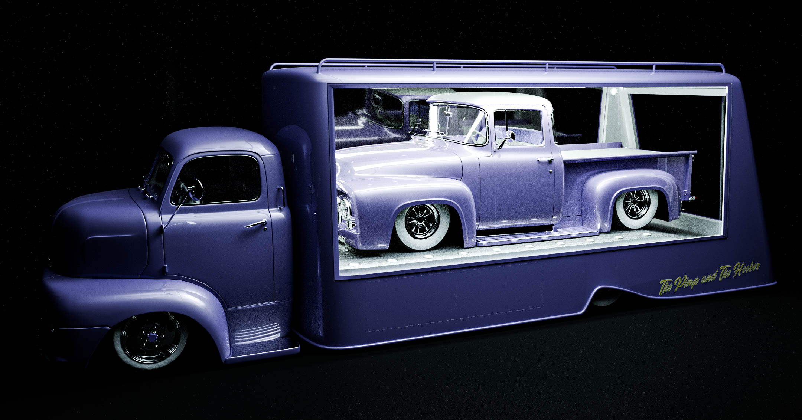
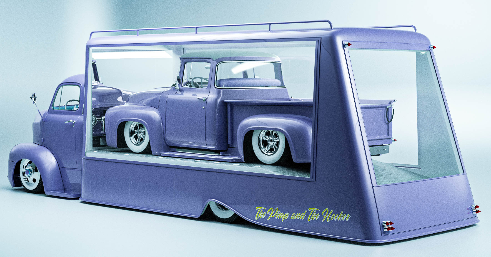
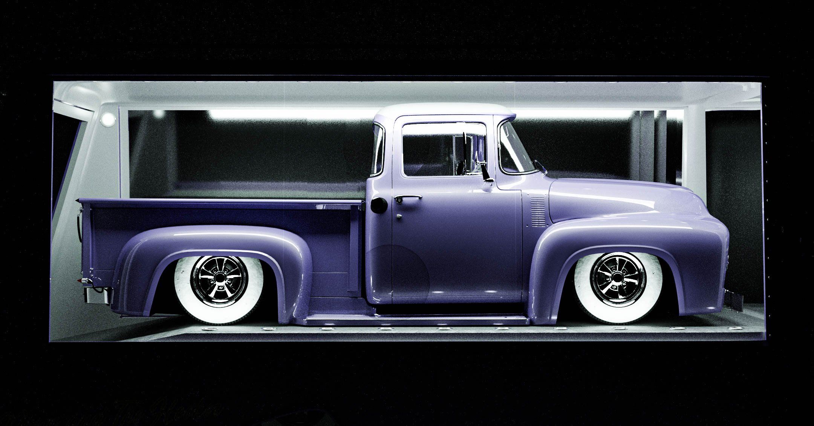
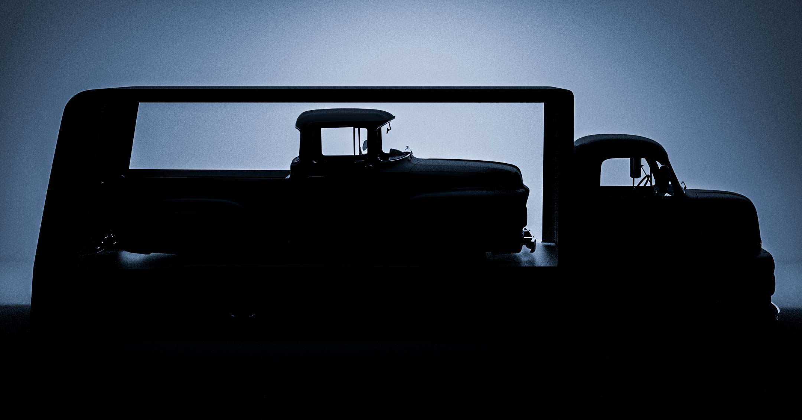

The Pimp and The Hooker
Introducing "The Pimp and The Hooker", a 1952 COE Ford with a glass hauler and a 1956 Ford F1 with a 51 custom grill. The idea was a "motorized" showroom with a little bit of classy and "i'm a pimp and that's my truck" style. I think that the special thing about this it's the ideia, an exhibition piece carrying an exhibition piece. Damn i love this thing.
     